Onze Kozijnen Portfolio
Bekijk enkele voorbeelden van ons vakmanschap. Elk kozijn is met zorg en precisie op maat gemaakt voor onze klanten. Van moderne strakke lijnen tot klassieke uitvoeringen - wij realiseren uw droomkozijn.
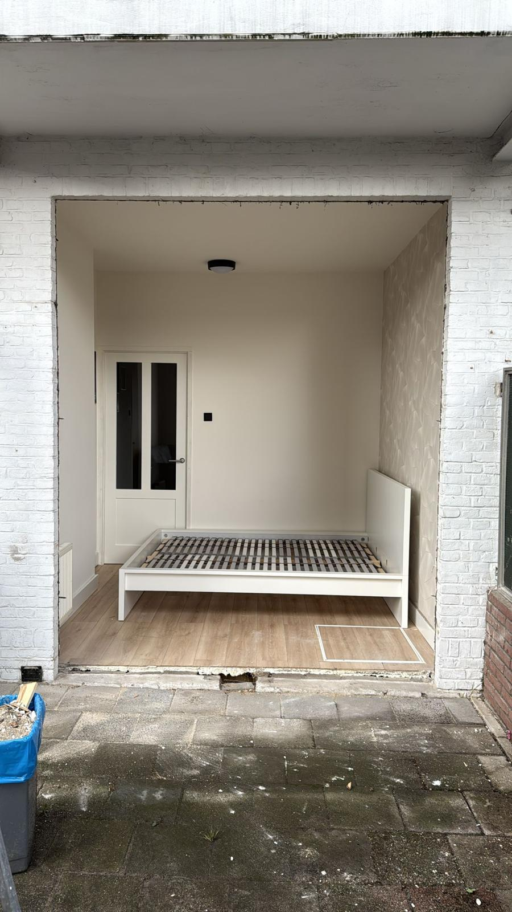
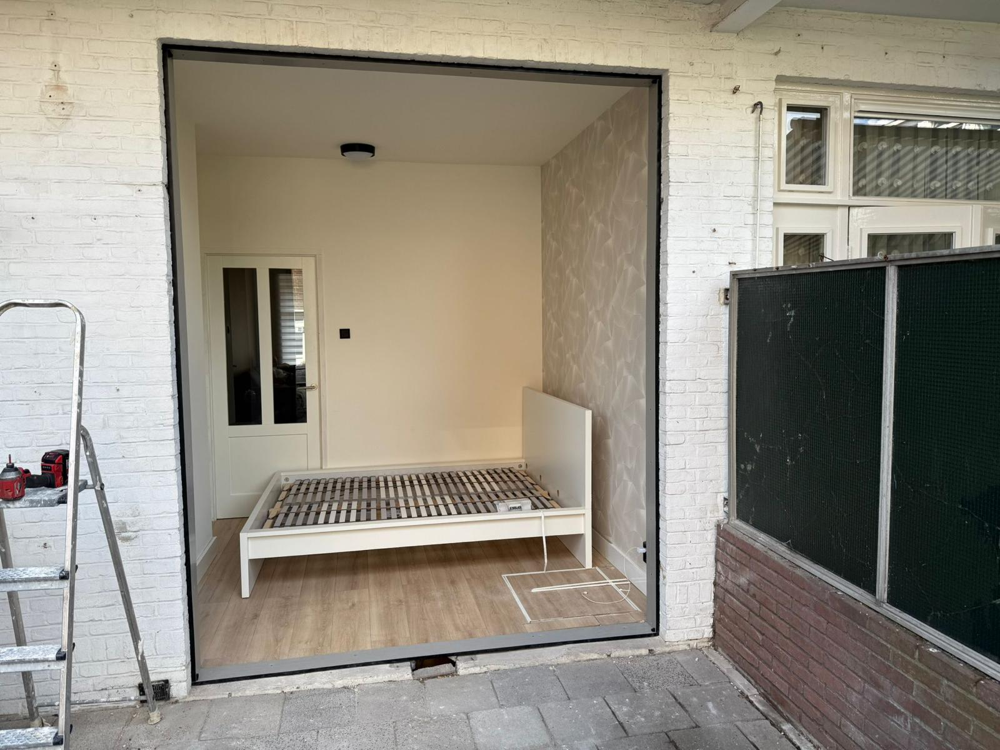
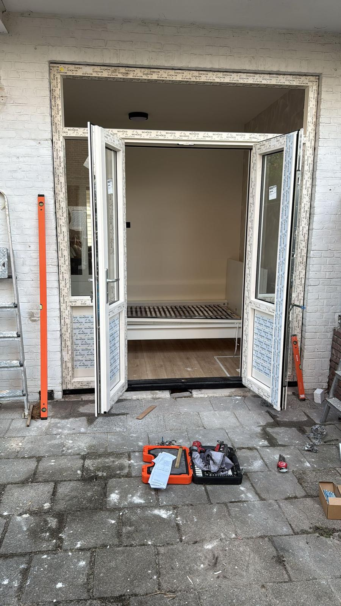
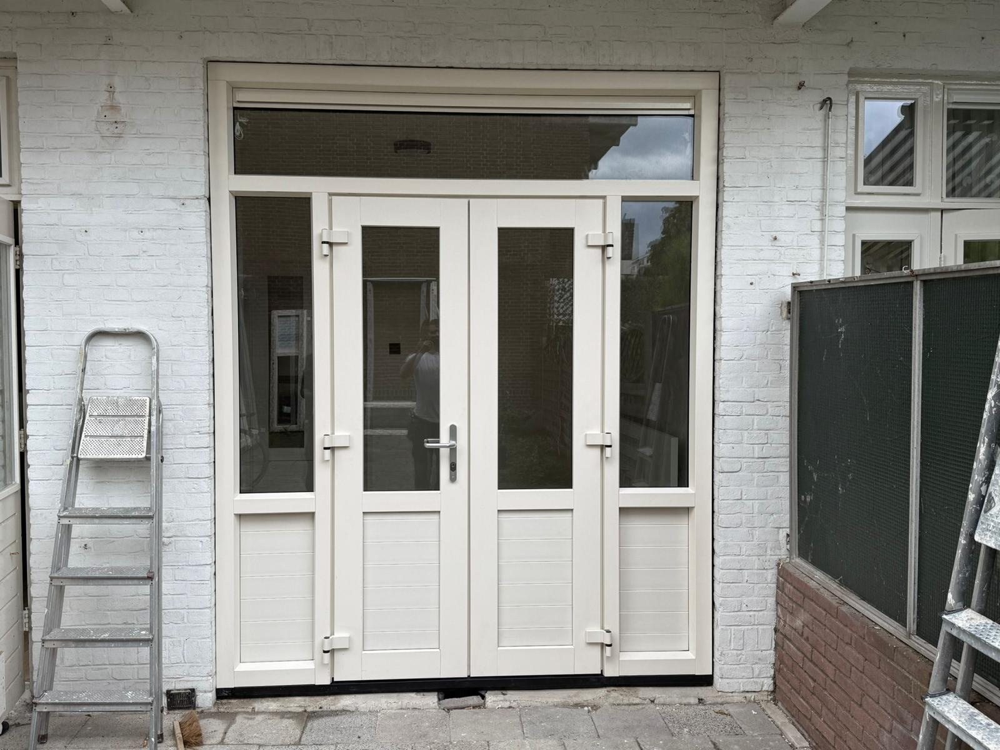
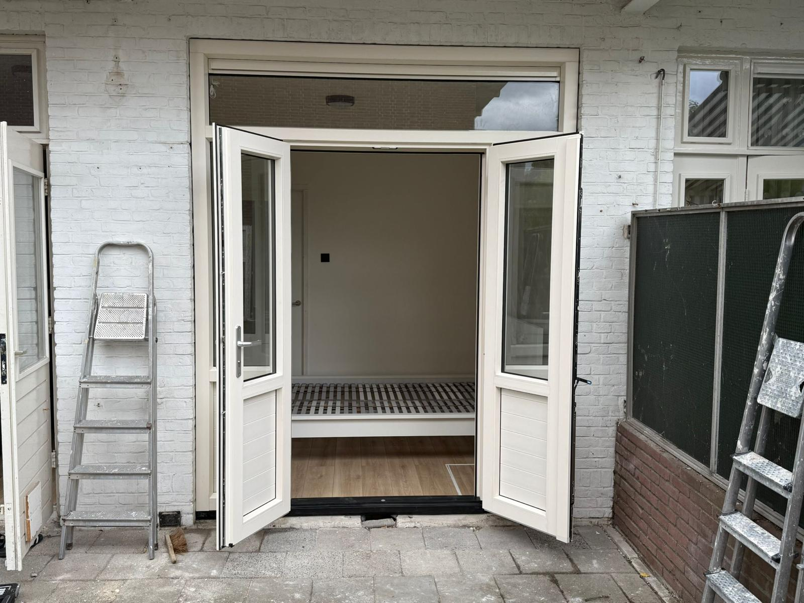
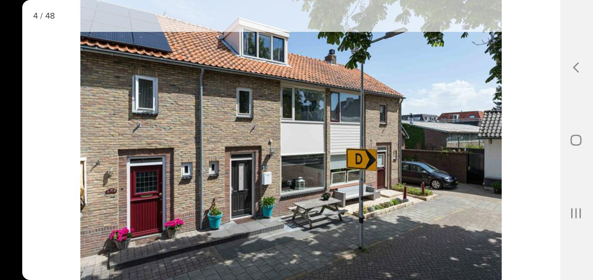
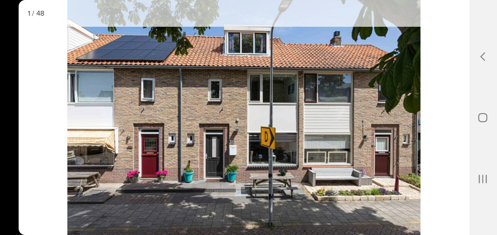
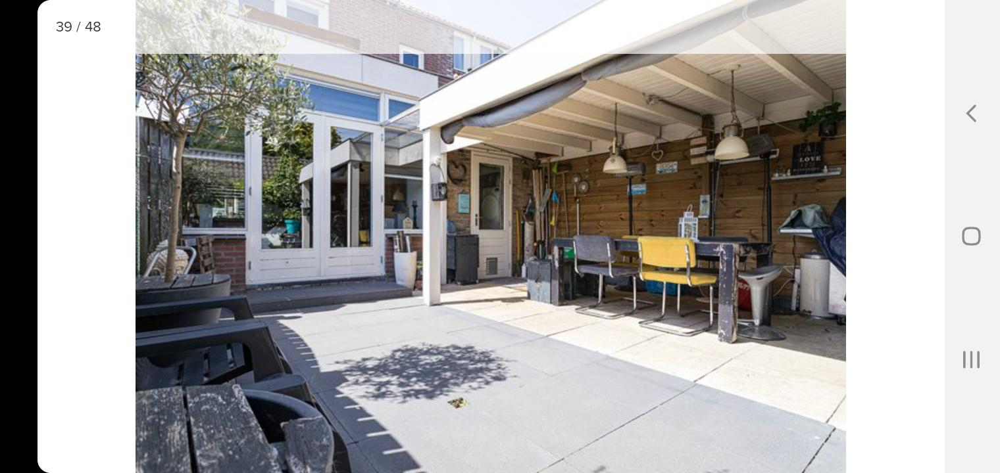
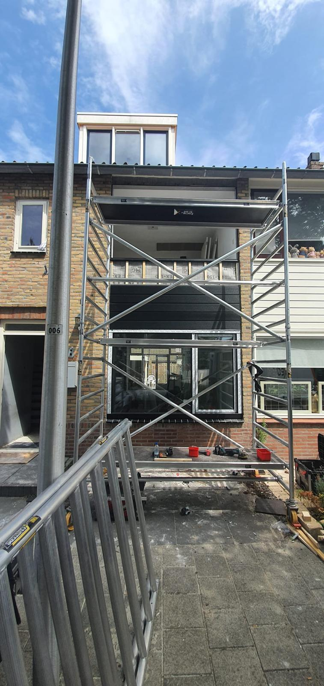
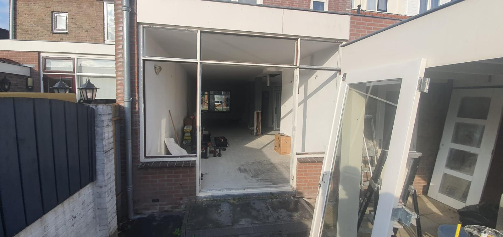
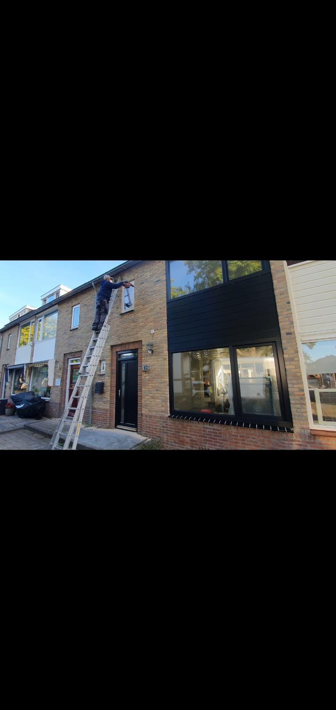
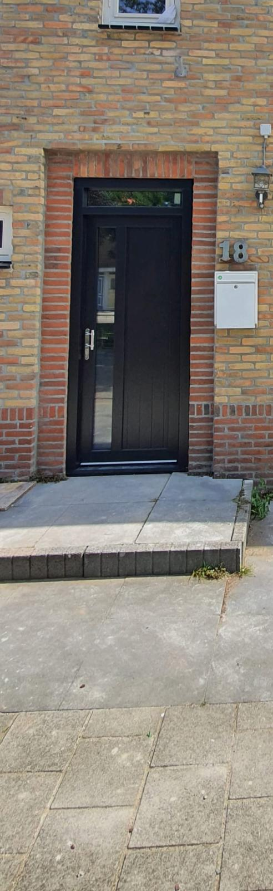
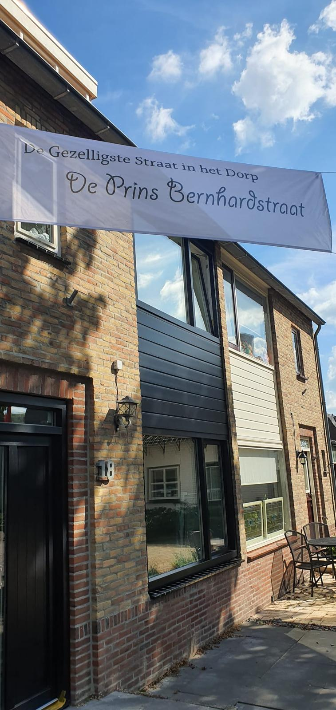
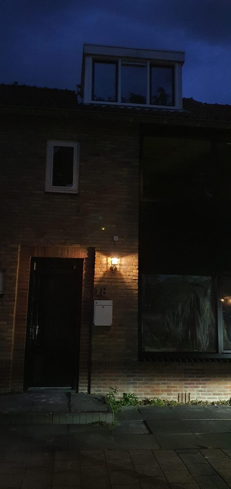
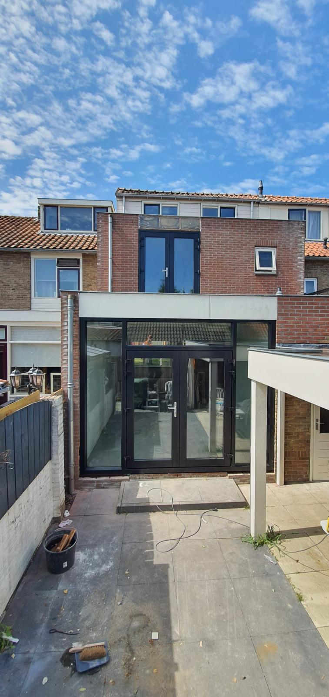

Waarom Kiezen voor Keurig Kozijn?
Kwaliteit
Met 10 jaar ervaring en oog voor detail leveren wij alleen kozijnen van de hoogste kwaliteit. Duurzaamheid en vakmanschap staan voorop.
Service
Van ontwerp tot plaatsing, alles uit één hand. Wij begeleiden u door het hele proces en zorgen voor een zorgeloze ervaring.
Energiezuinig
Onze kozijnen voldoen aan de nieuwste energie-eisen en dragen bij aan een comfortabel en energiezuinig woonklimaat.
Geïnteresseerd in onze kozijnen?
Neem contact met ons op voor een vrijblijvende offerte en persoonlijk advies.
Contact Opnemen